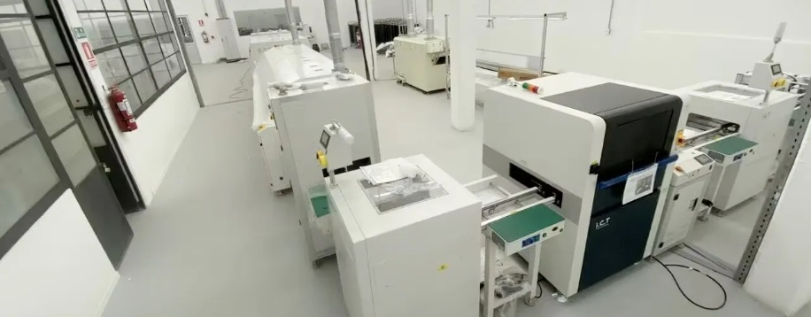
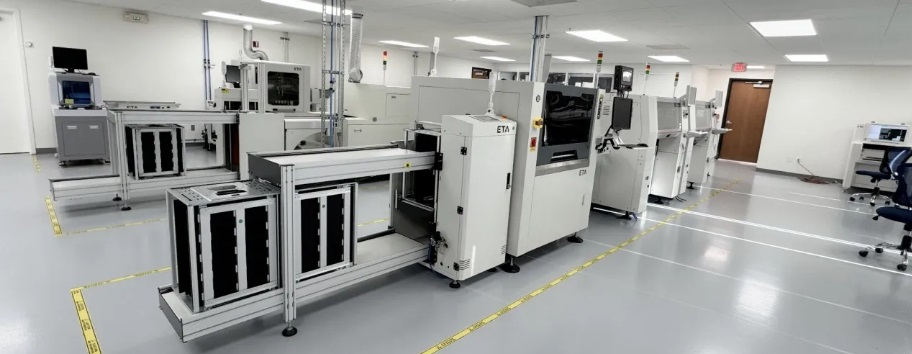

Eficiência em SMT
Como melhorar produtividade.

Qualidade em PCB
Redução de defeitos.

Lean na Eletrônica
Melhoria contínua aplicada.
Importância da Rastreabilidade na Produção SMT
A rastreabilidade no processo de fabricação de placas eletrônicas em tecnologia SMT (Surface Mount Technology) é um dos pilares fundamentais para garantir qualidade, confiabilidade e controle industrial. Em ambientes de produção cada vez mais exigentes, a capacidade de identificar, registrar e acompanhar cada etapa do processo produtivo torna-se essencial para a competitividade das empresas.
No contexto da montagem de placas, a rastreabilidade permite o acompanhamento completo desde a entrada dos componentes até o produto final. Isso inclui informações como lote de componentes, parâmetros de processo, dados de inspeção e operadores envolvidos. Com esse nível de controle, é possível identificar rapidamente a origem de falhas e agir de forma assertiva.
Além disso, a rastreabilidade é indispensável para atender normas de qualidade e requisitos de clientes, especialmente em setores como automotivo, médico e eletrônico de alta confiabilidade. Sistemas de rastreamento bem implementados reduzem riscos, aumentam a transparência e fortalecem a credibilidade da operação.
Outro benefício relevante está na melhoria contínua. A coleta estruturada de dados permite análises mais precisas, identificação de gargalos e otimização de processos. Com isso, a empresa não apenas resolve problemas, mas também previne sua recorrência.
Portanto, investir em rastreabilidade na linha SMT não é apenas uma exigência de mercado, mas uma estratégia essencial para elevar o nível de controle, qualidade e eficiência da produção eletrônica.